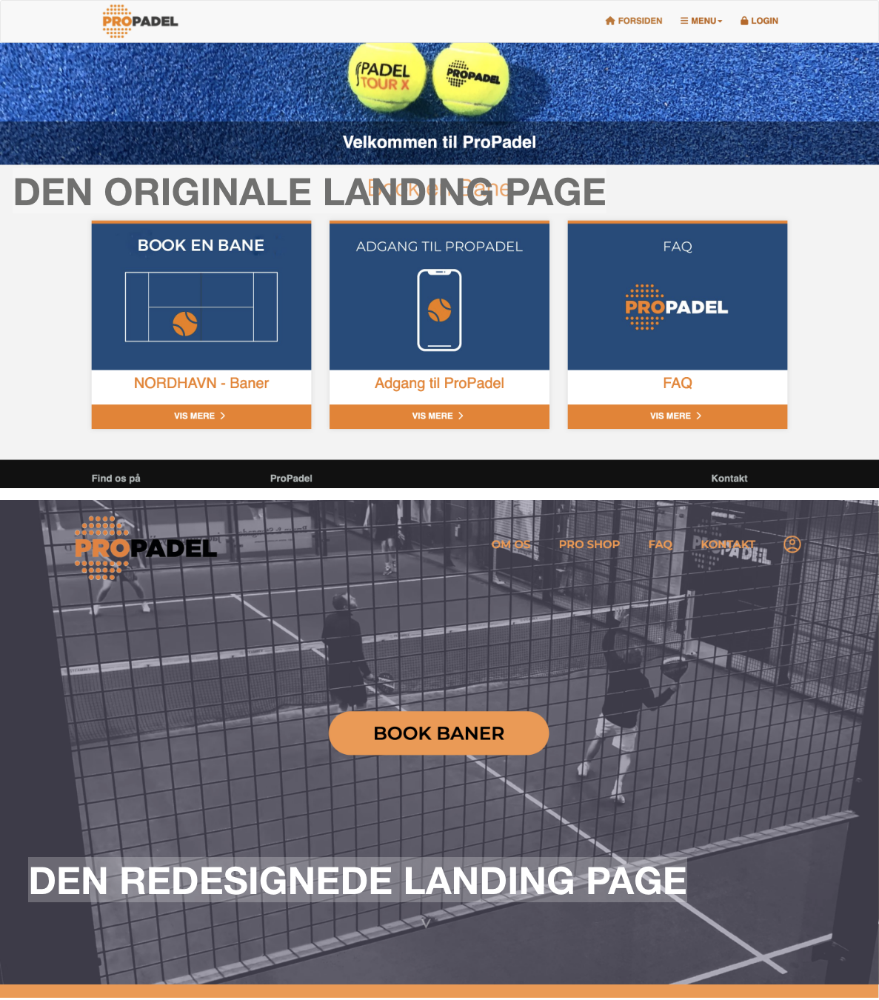
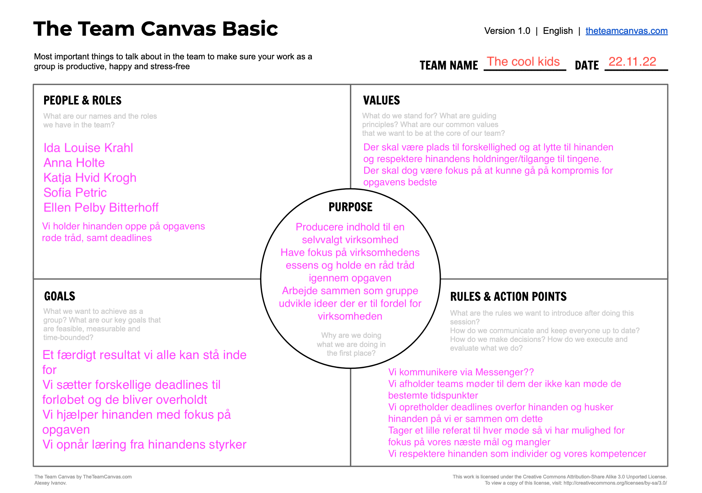
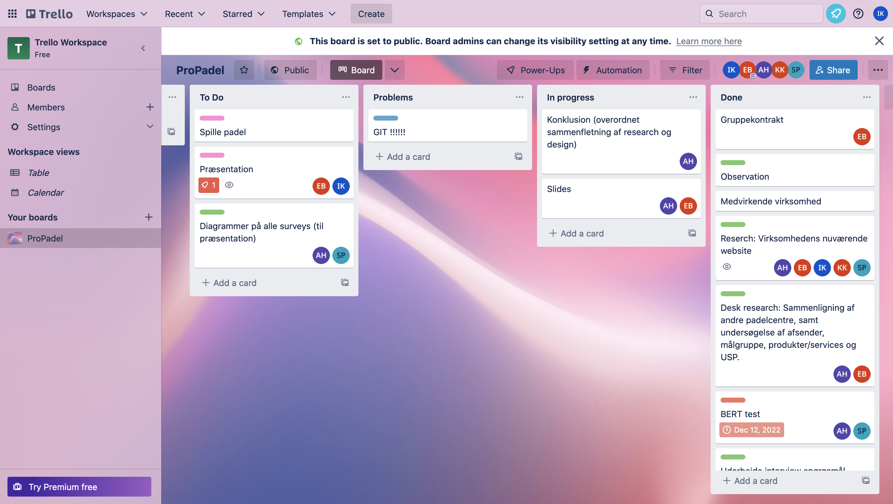

REDESIGN
OG TEMADOKUMENTATION
VIRKSOMHEDEN
Til denne opgave skulle vi finde frem til en virksomhed, som trængte til et redesign og nyt indhold.
Vi valgte at arbejde med ProPadel. Et populært padelcenter i Nordhavn, men hvor fokusset på deres digitale indentitet ikke var prioriteret særlig højt. Deres hjemmeside bestod primæret af et bookingsystem med et utroligt simpelt design uden specielt meget visuelt indhold.
GRUPPEARBEJDE
For første gang på semesteret, skulle vi arbejde i grupper om en opgave. Vi endte med at være en gruppe på 5 personer. Vi lavede en gruppekontrakt, så vi alle var enige i de roller, mål og regler vi satte for os selv.
Daily scrum
For at sørge for at vi overholdte de deadlines vi havde sat for os selv, oprettede vi et Trello board, hvor vi kunne holde styr på hvilke opgaver vi allerede var i gang med, hvilke der skulle laves og hvilke vi havde færdiggjort. Vi afholdte SCRUM dagligt, hvor vi hurtigt opsummerede hvor langt vi var kommet og hvad vi skulle i gang med.
______________________________________________________________________________________________________________________
RESEARCH OG TEST
Research
Vi ønskede at lave en grundig research inden vi gik i gang med at designe vores redesign, for at få en bedre forståelse for målgruppen, modtageren og konceptet. Vi startede mig at lavet noget deskresearch, for at få en forstårelse for hvad padel er og hvor udbredt det er i Danmark. Her fandt vi bl.a. ud af, at interessen for padel har taget fart i Danmark de seneste par år, og at der i udgangen af 2022, var omkring 500 padelbaner i Danmark.
Vi sendte også en survey om padel ud blandt vores omgangskreds. Vores survey blev besvaret af 37 personer. Her fik vi de 3 følgende indsigter:
- Af de kun 8 mænd der har svaret har disse alle svaret ja til at have prøvet padeltennis. Af dem der har svaret nej er det kun kvinder.
- Af de mænd der har svaret ja, har de fleste svaret at de har prøvet mindst et par gange eller mere end 5-10 gange.
- Der er en overrepræsentation af folk fra Københavnsområdet der har svaret ja.
Herefter tog vi ud til padelcenteret i Nordhavn for at interviewe medstifter, Jan Bitterhoff. Her nævnte Jan bl.a., at centeret blev stiftet som et form for frirum for ejerne og deres omgangskreds. Af den grund har der i en længere periode været en overvægt af mænd i alderen 30-55 år, men Jan fortæller dertil, at der med tiden er kommet flere og flere kvinder til, og at der også er begyndt at komme en stigning af unge af, der spiller padel. Vi ønskede at omfavne denne udvikling i vores redesign. Vi besluttede derfor, at sitet skulle gøres langt mere visuelt, så brugeren kunne få et bedre indblik i miljøet, stemningen og faciliteterne som ProPadel tilbyder.
Test
For at teste hvor vi skulle lægge vores fokus i vores redesign af websitet, lavede en 5 second test af ProPadels oprindelige website som vi sendte ud i vores omgangskreds. Vi spurgte bl.a. indtil førstehåndsindtryk, farver og blikfang. Mange opfattede websitet som værende gammel, lidt kedelig og uden det store blikfang.
______________________________________________________________________________________________________________________
PRODUKTION AF VIDEO- OG BILLEDMATERIALE

For at skabe større blikfang på sitets landing page, besluttede vi os for at producere en video, der skulle fungere som baggrund på vores landing page. Vi besluttede, at filmen skulle bestå af mange korte, hurtige klip, så den ville passe ind i et sporty og moderne padel-miljø. Vi klippede og redigerede filmen i Premiere Pro. I redigeringen lagde vi et nedtonet, gråt filter over filmen, så der stadig ville være størst fokus på navigationsmenuen og knapperne på landing pagen.
Derudover tog vi også en masse billeder af faciliteterne og udstyret, så brugeren har mulighed for at undersøge det inden de besøger centeret. Vi lagde også videointerviewet med medstifter Jan Bitterhoff op på sitets "Om os"-side, så brugeren, der kunne have lyst til det, har mulighed for at få mere information om centeret, dets oprindelse og stifterne bag. Vi fik produceret en masse visuelt materiale, der er med til at få vores redesign til at fremstå langt mere moderne.
______________________________________________________________________________________________________________________
XD-PROTOTYPE
For at blive helt enige om hvordan vores endelige redesign skulle se ud, lavede vi mock up's i Adobe XD til alle sitets sider. På den måde kunne vi få et godt overblik over om vi overholder gestalt lovene, samt lave eventuelle ændringer i designet inden vi gik i gang med at kode websitet. Efter aftale med ProPadels ejer, genbrugte vi farvekoderne, logoet og fontene fra deres oprindelige website.
Til at kode websitet, brugte vi den viden havde fået fra de tidligere opgaver i HTML, CSS og JavaScript.